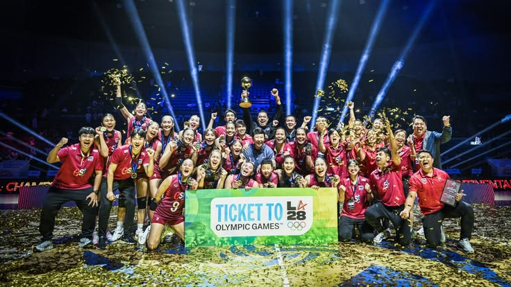
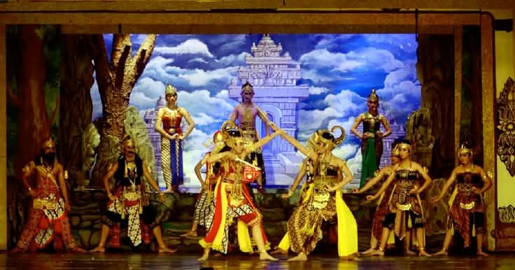
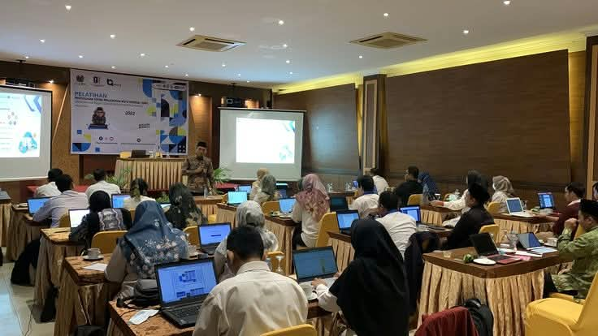

Selamat Datang di Website Resmi SMA Negeri Nusantara
Pusat Informasi Akademik, Prestasi Siswa, dan Layanan Sekolah Terpadu
Sambutan Kepala Sekolah
Dr. H. Ahmad Fauzi, M.Pd.
"Assalamu'alaikum Wr. Wb. Selamat datang di portal resmi SMA Negeri Nusantara. Kami berkomitmen untuk mencetak generasi yang cerdas, kompetitif, dan berakhlak mulia."
Berita Terbaru & Kegiatan

Juara Olimpiade Sains
Siswa SMAN Nusantara meraih medali emas tingkat nasional.

Pentas Seni 2026
Ajang unjuk bakat seni dan kreativitas pelajar.

Studi Kampus
Kunjungan edukatif siswa kelas XII ke universitas negeri.
Ekstrakurikuler & Kegiatan
- 🏀 Bola Basket & Voli
- 💻 Klub Pemrograman & Robotika
- 🎶 Paduan Suara & Seni Musik
- 🔴 Paskibra & Pramuka
Tautan Penting
- 📅 Kalender Akademik Terbaru
- 📝 Pendaftaran Pengurus OSIS
- 📍 Peta Lokasi & Kontak Sekolah